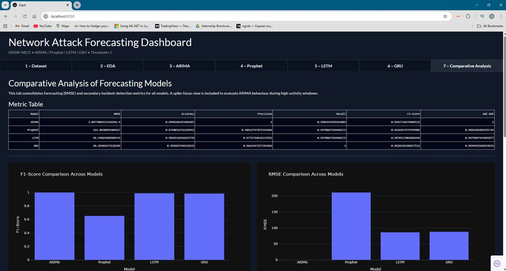
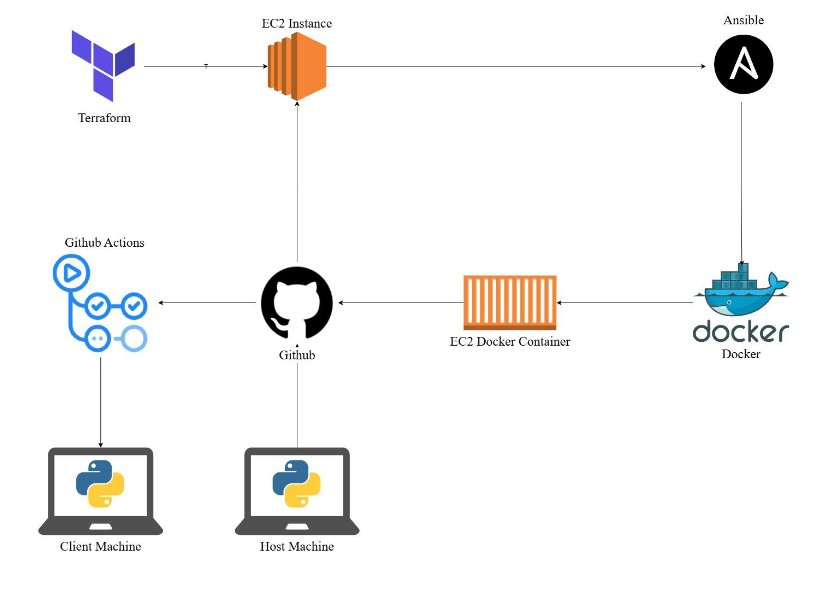
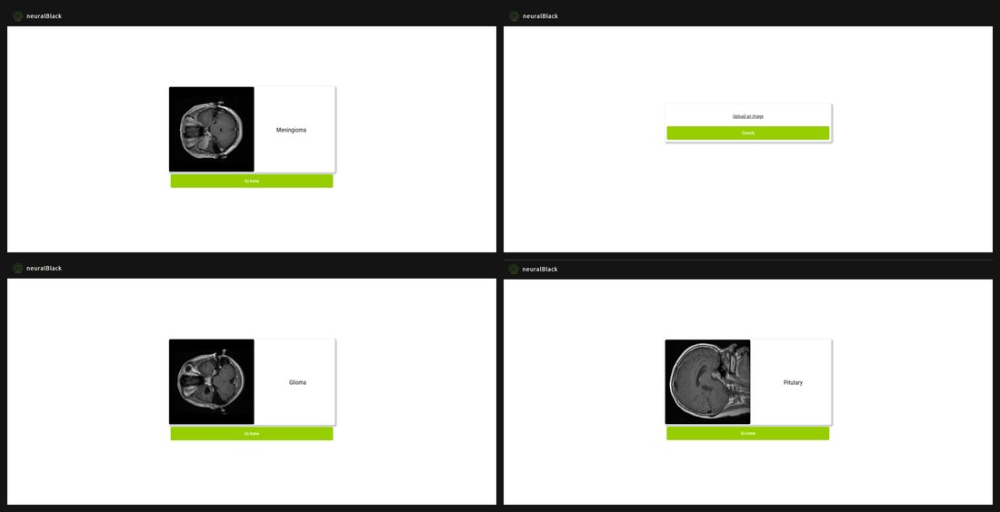
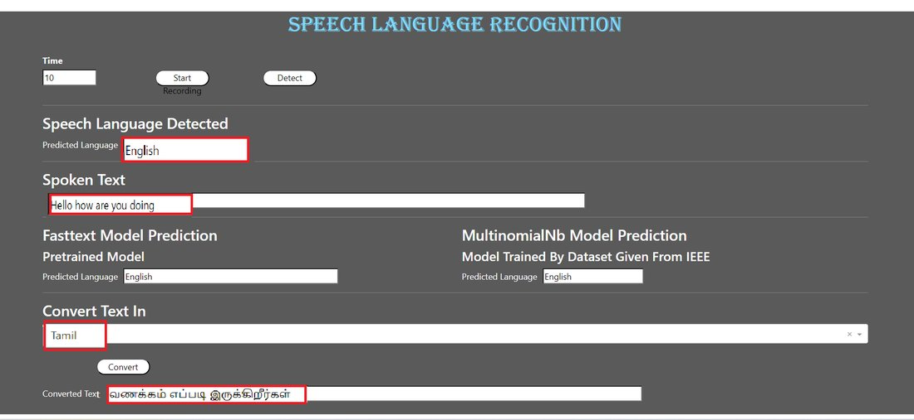
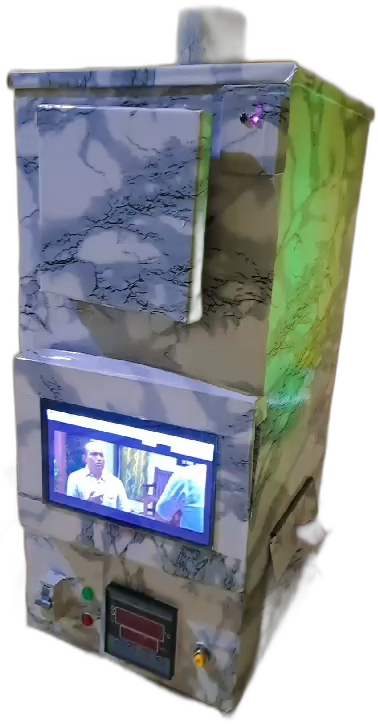

I build systems that predict threats and ship themselves.
I started in machine learning at Shark Analytics, building models that forecast stock movement at 90%+ accuracy and pipelines that cut manual processing by 40%.
Then I turned the same forecasting instinct toward security: my MSc thesis benchmarks ARIMA, Prophet, LSTM and GRU against 2.5M+ real network flows to predict cyber-attack intensity before it peaks.
What ties the work together is a habit of shipping the whole stack myself — model, pipeline, and the interface someone actually uses on top of it.
Currently based in Dublin, having completed an MSc in Cybersecurity at Dublin Business School with First Class Honours.
Hover a project card to expand it and see the full case study.

Benchmarked ARIMA, Prophet, LSTM and GRU on 2.5M+ real network flows to forecast cyber-attack intensity before it peaks, then shipped the winning model behind a live Flask/Dash SOC dashboard with early-warning alerting.

Commit-to-production pipeline, zero-downtime, under 10 minutes.
Manual AWS deploys took ~60 minutes with room for human error at every step.
Terraform provisions EC2, Ansible configures it, Docker containerises the app, GitHub Actions runs CI/CD.
Deploy time dropped to under 10 minutes, zero-downtime releases.

CNN pipeline detecting, classifying & segmenting tumors from MRI scans.
Manually reviewing MRI scans is slow and depends on radiologist availability.
Trained a CNN on the Br35H dataset to detect, classify, and segment tumors.
Upload an MRI, get detection, classification, and a segmented region back.

Detects spoken language, then converts speech to text.
Multilingual speech input needs language ID before transcription can start.
Detects the spoken language, then routes it through language-specific speech-to-text conversion.
Multi-language support with a simple speech-in, text-out interface.

Hardware + software build automating a manual waste disposal unit.
Manual sanitary waste disposal machines needed constant hands-on operation and lacked hygiene safeguards.
Automated the machine using servo motors, a solenoid lock, and an IR sensor, plus an HDMI display unit and an air-purifying water scrubbing filter.
A touch-free, automated disposal unit with a live status display.
Hybrid collaborative + content-based filtering
Regression & ensemble forecasting
Consumer segmentation on survey data
Web app for booking & managing rides
ESP32-CAM + Peltier cold-chain rig — hardware, not on GitHub
Arduino/NodeMCU sensor rig — hardware, not on GitHub
Hover a card to flip it.
Cloud fundamentals and practitioner-track certification covering core GCP services.
Udemy — backend web development fundamentals with Django.
Udemy — applied ML and data science fundamentals.
Filed 2024 — a system for detecting and monitoring power theft using IoT sensors.
Filed 2022 — an apparatus for automating waste segregation.
Aug 2021 – Feb 2023 · led a 15-member team, ran 10+ tech events, lifted engagement 60%.